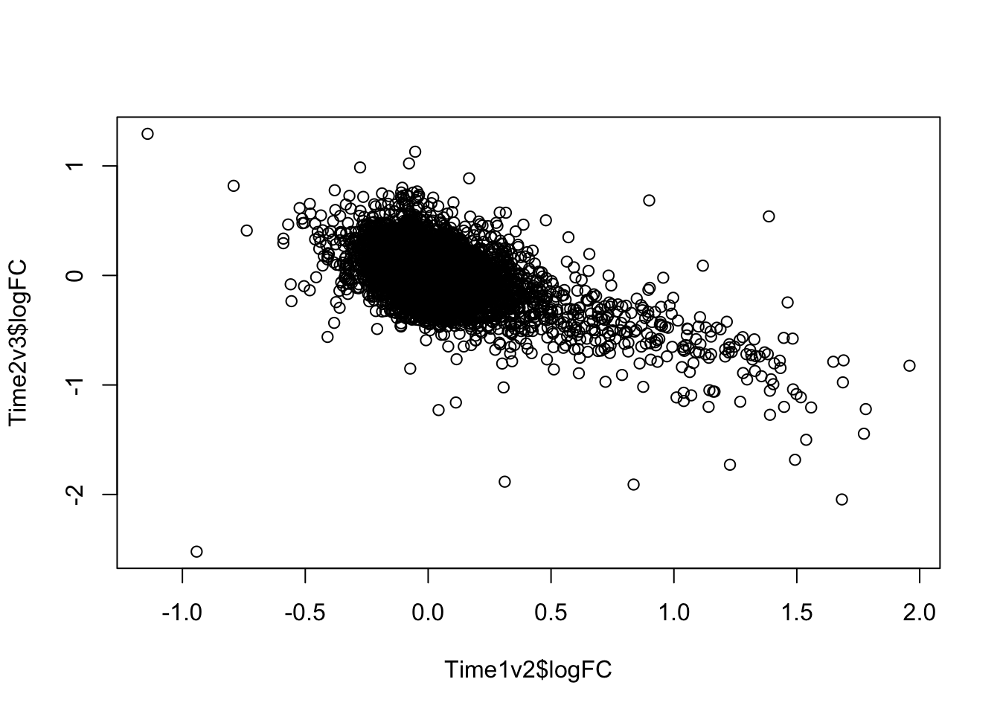
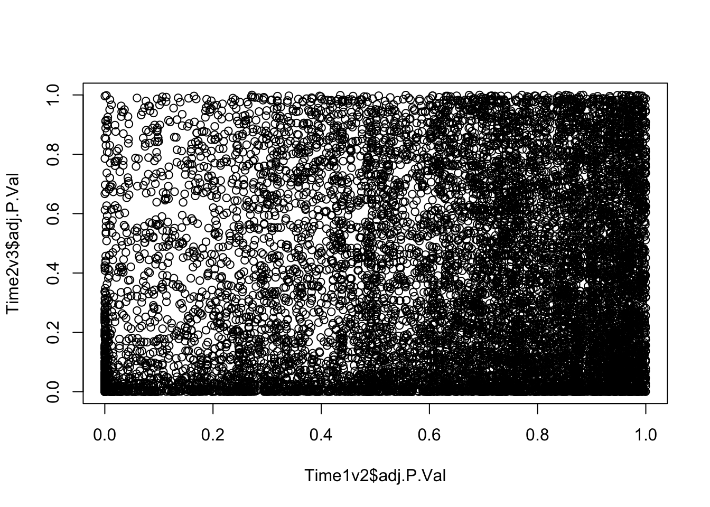
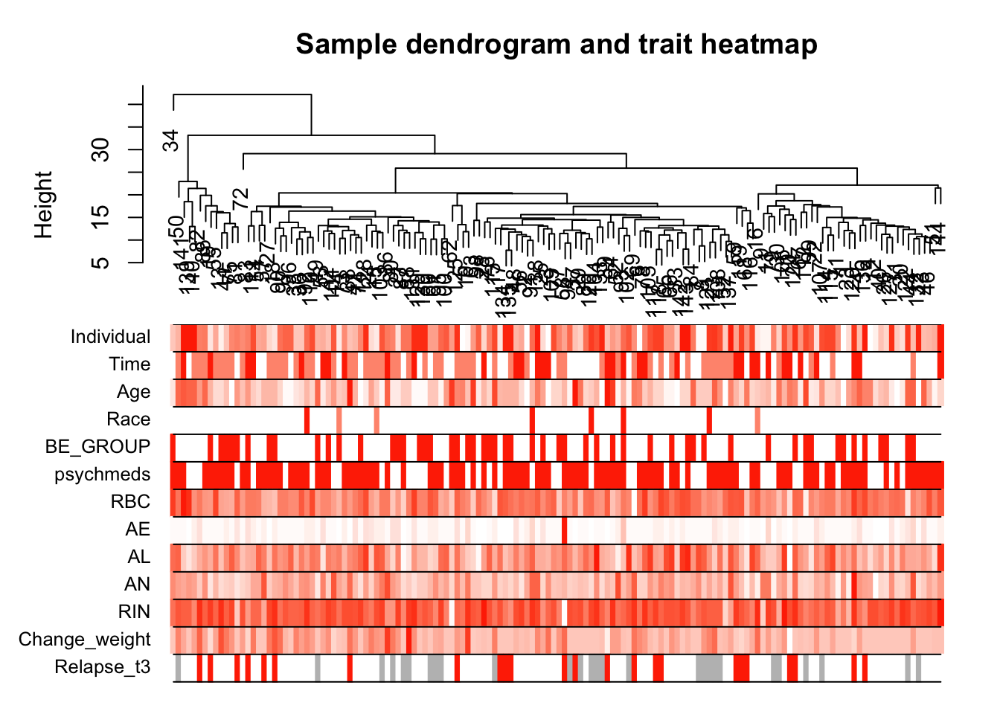

voom_limma
Lauren Blake
2018-08-13
Last updated: 2018-11-15
workflowr checks: (Click a bullet for more information)-
✔ R Markdown file: up-to-date
Great! Since the R Markdown file has been committed to the Git repository, you know the exact version of the code that produced these results.
-
✔ Environment: empty
Great job! The global environment was empty. Objects defined in the global environment can affect the analysis in your R Markdown file in unknown ways. For reproduciblity it’s best to always run the code in an empty environment.
-
✔ Seed:
set.seed(12345)The command
set.seed(12345)was run prior to running the code in the R Markdown file. Setting a seed ensures that any results that rely on randomness, e.g. subsampling or permutations, are reproducible. -
✔ Session information: recorded
Great job! Recording the operating system, R version, and package versions is critical for reproducibility.
-
Great! You are using Git for version control. Tracking code development and connecting the code version to the results is critical for reproducibility. The version displayed above was the version of the Git repository at the time these results were generated.✔ Repository version: 7bcd123
Note that you need to be careful to ensure that all relevant files for the analysis have been committed to Git prior to generating the results (you can usewflow_publishorwflow_git_commit). workflowr only checks the R Markdown file, but you know if there are other scripts or data files that it depends on. Below is the status of the Git repository when the results were generated:
Note that any generated files, e.g. HTML, png, CSS, etc., are not included in this status report because it is ok for generated content to have uncommitted changes.Ignored files: Ignored: .DS_Store Ignored: analysis/.DS_Store Ignored: analysis/VennDiagram2018-07-24_06-55-46.log Ignored: analysis/VennDiagram2018-07-24_06-56-13.log Ignored: analysis/VennDiagram2018-07-24_06-56-50.log Ignored: analysis/VennDiagram2018-07-24_06-58-41.log Ignored: analysis/VennDiagram2018-07-24_07-00-07.log Ignored: analysis/VennDiagram2018-07-24_07-00-42.log Ignored: analysis/VennDiagram2018-07-24_07-01-08.log Ignored: analysis/VennDiagram2018-08-17_15-13-24.log Ignored: analysis/VennDiagram2018-08-17_15-13-30.log Ignored: analysis/VennDiagram2018-08-17_15-15-06.log Ignored: analysis/VennDiagram2018-08-17_15-16-01.log Ignored: analysis/VennDiagram2018-08-17_15-17-51.log Ignored: analysis/VennDiagram2018-08-17_15-18-42.log Ignored: analysis/VennDiagram2018-08-17_15-19-21.log Ignored: analysis/VennDiagram2018-08-20_09-07-57.log Ignored: analysis/VennDiagram2018-08-20_09-08-37.log Ignored: analysis/VennDiagram2018-08-26_19-54-03.log Ignored: analysis/VennDiagram2018-08-26_20-47-08.log Ignored: analysis/VennDiagram2018-08-26_20-49-49.log Ignored: analysis/VennDiagram2018-08-27_00-04-36.log Ignored: analysis/VennDiagram2018-08-27_00-09-27.log Ignored: analysis/VennDiagram2018-08-27_00-13-57.log Ignored: analysis/VennDiagram2018-08-27_00-16-32.log Ignored: analysis/VennDiagram2018-08-27_10-00-25.log Ignored: analysis/VennDiagram2018-08-28_06-03-13.log Ignored: analysis/VennDiagram2018-08-28_06-03-14.log Ignored: analysis/VennDiagram2018-08-28_06-05-50.log Ignored: analysis/VennDiagram2018-08-28_06-06-58.log Ignored: analysis/VennDiagram2018-08-28_06-10-12.log Ignored: analysis/VennDiagram2018-08-28_06-10-13.log Ignored: analysis/VennDiagram2018-08-28_06-18-29.log Ignored: analysis/VennDiagram2018-08-28_07-22-26.log Ignored: analysis/VennDiagram2018-08-28_07-22-27.log Ignored: analysis/VennDiagram2018-08-28_13-05-27.log Ignored: analysis/VennDiagram2018-09-12_01-45-59.log Ignored: analysis/VennDiagram2018-09-12_01-49-31.log Ignored: analysis/VennDiagram2018-09-12_01-58-11.log Ignored: analysis/VennDiagram2018-09-12_01-59-46.log Ignored: analysis/VennDiagram2018-09-12_02-08-07.log Ignored: analysis/VennDiagram2018-09-12_02-08-56.log Ignored: analysis/VennDiagram2018-11-15_14-20-08.log Ignored: analysis/VennDiagram2018-11-15_14-20-15.log Ignored: analysis/VennDiagram2018-11-15_14-20-23.log Ignored: analysis/VennDiagram2018-11-15_14-21-14.log Ignored: analysis/VennDiagram2018-11-15_14-21-57.log Ignored: analysis/VennDiagram2018-11-15_14-33-34.log Ignored: analysis/VennDiagram2018-11-15_14-36-19.log Ignored: analysis/VennDiagram2018-11-15_14-48-41.log Ignored: analysis/VennDiagram2018-11-15_14-48-42.log Ignored: analysis/VennDiagram2018-11-15_15-03-35.log Ignored: analysis/VennDiagram2018-11-15_15-03-55.log Ignored: analysis/VennDiagram2018-11-15_15-07-05.log Ignored: analysis/VennDiagram2018-11-15_15-07-25.log Ignored: analysis/VennDiagram2018-11-15_15-09-29.log Ignored: analysis/VennDiagram2018-11-15_15-09-48.log Ignored: analysis/VennDiagram2018-11-15_15-14-30.log Ignored: analysis/VennDiagram2018-11-15_15-15-25.log Ignored: data/DAVID_2covar/ Ignored: data/DAVID_results/ Ignored: data/Eigengenes/ Ignored: data/aux_info/ Ignored: data/hg_38/ Ignored: data/libParams/ Ignored: data/logs/ Ignored: docs/VennDiagram2018-07-24_06-55-46.log Ignored: docs/VennDiagram2018-07-24_06-56-13.log Ignored: docs/VennDiagram2018-07-24_06-56-50.log Ignored: docs/VennDiagram2018-07-24_06-58-41.log Ignored: docs/VennDiagram2018-07-24_07-00-07.log Ignored: docs/VennDiagram2018-07-24_07-00-42.log Ignored: docs/VennDiagram2018-07-24_07-01-08.log Ignored: docs/figure/.DS_Store Ignored: output/.DS_Store Untracked files: Untracked: docs/figure/time_two_covar.Rmd/ Unstaged changes: Modified: analysis/time_two_covar.Rmd
Expand here to see past versions:
Load raw counts and clinical data
# Library
library(edgeR)Loading required package: limmalibrary(limma)
library(VennDiagram)Warning: package 'VennDiagram' was built under R version 3.4.4Loading required package: gridLoading required package: futile.loggerlibrary(ggplot2)Warning: package 'ggplot2' was built under R version 3.4.4library(cowplot)Warning: package 'cowplot' was built under R version 3.4.4
Attaching package: 'cowplot'The following object is masked from 'package:ggplot2':
ggsave# Read in the data
tx.salmon <- readRDS("../data/counts_hg38_gc_txsalmon.RData")
salmon_counts<- as.data.frame(tx.salmon$counts)
#tx.salmon <- readRDS("../data/counts_hg38_gc_dds.RData")
#salmon_counts<- as.data.frame(tx.salmon)
# Subset to T1-T3
salmon_counts <- salmon_counts[,1:144]
# Read in the clinical covariates
clinical_sample_info <- read.csv("../data/lm_covar_fixed_random.csv")
dim(clinical_sample_info)[1] 156 14# Subset to T1-T3
clinical_sample <- clinical_sample_info[1:144,(-12)]
dim(clinical_sample)[1] 144 13Differential expression pipeline: TMM+voom+limma
# Filter lowly expressed reads
cpm <- cpm(salmon_counts, log=TRUE)
expr_cutoff <- 1.5
hist(cpm, main = "log2(CPM) values in unfiltered data", breaks = 100, xlab = "log2(CPM) values")
abline(v = expr_cutoff, col = "red", lwd = 3)Expand here to see past versions of unnamed-chunk-2-1.png:
| Version | Author | Date |
|---|---|---|
| 7bcd123 | Lauren Blake | 2018-11-15 |
hist(cpm, main = "log2(CPM) values in unfiltered data", breaks = 100, xlab = "log2(CPM) values", ylim = c(0, 100000))
abline(v = expr_cutoff, col = "red", lwd = 3)Expand here to see past versions of unnamed-chunk-2-2.png:
| Version | Author | Date |
|---|---|---|
| 7bcd123 | Lauren Blake | 2018-11-15 |
# Basic filtering
cpm_filtered <- (rowSums(cpm > 1.5) > 72)
genes_in_cutoff <- cpm[cpm_filtered==TRUE,]
hist(as.numeric(unlist(genes_in_cutoff)), main = "log2(CPM) values in filtered data", breaks = 100, xlab = "log2(CPM) values")
Expand here to see past versions of unnamed-chunk-2-3.png:
| Version | Author | Date |
|---|---|---|
| 7bcd123 | Lauren Blake | 2018-11-15 |
# Find the original counts of all of the genes that fit the criteria
counts_genes_in_cutoff <- salmon_counts[cpm_filtered==TRUE,]
dim(counts_genes_in_cutoff)[1] 11619 144# Filter out hemoglobin
counts_genes_in_cutoff <- counts_genes_in_cutoff[which( rownames(counts_genes_in_cutoff) != "HBB" ),]
counts_genes_in_cutoff <- counts_genes_in_cutoff[which( rownames(counts_genes_in_cutoff) != "HBA2" ),]
counts_genes_in_cutoff <- counts_genes_in_cutoff[which( rownames(counts_genes_in_cutoff) != "HBA1" ),]
# Take the TMM of the counts only for the genes that remain after filtering
dge_in_cutoff <- DGEList(counts=as.matrix(counts_genes_in_cutoff), genes=rownames(counts_genes_in_cutoff), group = as.character(t(clinical_sample$Individual)))
dge_in_cutoff <- calcNormFactors(dge_in_cutoff)
cpm_in_cutoff <- cpm(dge_in_cutoff, normalized.lib.sizes=TRUE, log=TRUE)
# Run PCA on the cpm data
pca_genes <- prcomp(t(cpm_in_cutoff), scale = T, retx = TRUE, center = TRUE)
matrixpca <- pca_genes$x
PC1 <- matrixpca[,1]
PC2 <- matrixpca[,2]
pc3 <- matrixpca[,3]
pc4 <- matrixpca[,4]
pc5 <- matrixpca[,5]
pcs <- data.frame(PC1, PC2, pc3, pc4, pc5)
summary <- summary(pca_genes)
head(summary$importance[2,1:5]) PC1 PC2 PC3 PC4 PC5
0.25012 0.13000 0.08757 0.05524 0.03285 norm_count <- ggplot(data=pcs, aes(x=PC1, y=PC2, color= as.factor(clinical_sample$Time))) + geom_point(aes(colour = as.factor(clinical_sample$Time))) + ggtitle("PCA of normalized counts") + scale_color_discrete(name = "Time")
plot_grid(norm_count)Expand here to see past versions of unnamed-chunk-2-4.png:
| Version | Author | Date |
|---|---|---|
| 7bcd123 | Lauren Blake | 2018-11-15 |
# Make sure certain clinical factors are factors (e.g. presence of psychiatric meds or not)
clinical_sample[,1] <- as.factor(clinical_sample[,1])
clinical_sample[,2] <- as.factor(clinical_sample[,2])
clinical_sample[,4] <- as.factor(clinical_sample[,4])
clinical_sample[,5] <- as.factor(clinical_sample[,5])
clinical_sample[,6] <- as.factor(clinical_sample[,6])
# Create the design matrix
# Use the standard treatment-contrasts parametrization. See Ch. 9 of limma
# User's Guide.
design <- model.matrix(~as.factor(Time) + Age + as.factor(Race) + as.factor(BE_GROUP) + as.factor(psychmeds) + RBC + AN + AE + AL + RIN, data = clinical_sample)
colnames(design) <- c("Intercept", "Time2", "Time3", "Race3", "Race5", "Age", "BE", "Psychmeds", "RBC", "AN", "AE", "AL", "RIN")
# Fit model
# Model individual as a random effect.
# Recommended to run both voom and duplicateCorrelation twice.
# https://support.bioconductor.org/p/59700/#67620
cpm.voom <- voom(dge_in_cutoff, design, normalize.method="none")
#check_rel <- duplicateCorrelation(cpm.voom, design, block = clinical_sample$Individual)
check_rel_correlation <- 0.1179835
cpm.voom.corfit <- voom(dge_in_cutoff, design, normalize.method="none", plot = TRUE, block = clinical_sample$Individual, correlation = check_rel_correlation)
Expand here to see past versions of unnamed-chunk-2-5.png:
| Version | Author | Date |
|---|---|---|
| 7bcd123 | Lauren Blake | 2018-11-15 |
#check_rel <- duplicateCorrelation(cpm.voom.corfit, design, block = clinical_sample$Individual)
check_rel_correlation <- 0.1188083
# Look at the densities of the gene expression data
plotDensities(cpm.voom.corfit[,1])
Expand here to see past versions of unnamed-chunk-2-6.png:
| Version | Author | Date |
|---|---|---|
| 7bcd123 | Lauren Blake | 2018-11-15 |
plotDensities(cpm.voom.corfit[,2])Expand here to see past versions of unnamed-chunk-2-7.png:
| Version | Author | Date |
|---|---|---|
| 7bcd123 | Lauren Blake | 2018-11-15 |
plotDensities(cpm.voom.corfit[,3])
Expand here to see past versions of unnamed-chunk-2-8.png:
| Version | Author | Date |
|---|---|---|
| 7bcd123 | Lauren Blake | 2018-11-15 |
# PCA on the filtered, normalized data
pca_genes <- prcomp(t(cpm.voom.corfit$E), scale = T, retx = TRUE, center = TRUE)
matrixpca <- pca_genes$x
PC1 <- matrixpca[,1]
PC2 <- matrixpca[,2]
pc3 <- matrixpca[,3]
pc4 <- matrixpca[,4]
pc5 <- matrixpca[,5]
pc6 <- matrixpca[,6]
pcs <- data.frame(PC1, PC2, pc3, pc4, pc5, pc6)
summary <- summary(pca_genes)
head(summary$importance[2,1:6]) PC1 PC2 PC3 PC4 PC5 PC6
0.25066 0.13028 0.08774 0.05501 0.03289 0.02483 # PCA by time
norm_count <- ggplot(data=pcs, aes(x=PC1, y=PC2, color=clinical_sample$Time)) + geom_point(aes(colour = as.factor(clinical_sample$Time))) + scale_color_discrete(name = "Time") + xlab("PC1 (25.1% of variance)") + ylab("PC2 (13.0% of variance)") + scale_colour_manual(name = "Time", values=c("#E69F00", "#009E73", "#CC79A7", "#0072B2", "#D55E00"))Scale for 'colour' is already present. Adding another scale for
'colour', which will replace the existing scale.save_plot("/Users/laurenblake/Dropbox/Lauren Blake/Figures/Hg38_PC12_time12.png", norm_count,
base_aspect_ratio = 1)
norm_count <- ggplot(data=pcs, aes(x=pc3, y=pc4, color=clinical_sample$Time)) + geom_point(aes(colour = as.factor(clinical_sample$Time))) + scale_color_discrete(name = "Time") + xlab("PC3 (8.8% of variance)") + ylab("PC4 (5.5% of variance)") + scale_colour_manual(name = "Time", values=c("#E69F00", "#009E73", "#CC79A7", "#0072B2", "#D55E00"))Scale for 'colour' is already present. Adding another scale for
'colour', which will replace the existing scale.save_plot("/Users/laurenblake/Dropbox/Lauren Blake/Figures/Hg38_PC34_time12.png", norm_count,
base_aspect_ratio = 1)
norm_count <- ggplot(data=pcs, aes(x=pc5, y=pc6, color=clinical_sample$Time)) + geom_point(aes(colour = as.factor(clinical_sample$Time))) + scale_color_discrete(name = "Time") + xlab("PC5 (3.3% of variance)") + ylab("PC6 (2.5% of variance)") + scale_colour_manual(name = "Time", values=c("#E69F00", "#009E73", "#CC79A7", "#0072B2", "#D55E00"))Scale for 'colour' is already present. Adding another scale for
'colour', which will replace the existing scale.save_plot("/Users/laurenblake/Dropbox/Lauren Blake/Figures/Hg38_PC56_time12.png", norm_count,
base_aspect_ratio = 1)
# PCA by RIN
rng = range(c((4), (8)))
norm_count <- ggplot(data=pcs, aes(x=PC1, y=PC2, color=clinical_sample$RIN)) + geom_point(aes(color = clinical_sample$RIN))+ xlab("PC1 (25.1% of variance)") + ylab("PC2 (13.0% of variance)") + scale_color_gradient2(low="blue", high="red", midpoint=mean(rng), breaks=seq(-100,100,4), limits=c(floor(rng[1]), ceiling(rng[2]))) + labs(color="RIN")
save_plot("/Users/laurenblake/Dropbox/Lauren Blake/Figures/Hg38_PC12_RIN.png", norm_count,
base_aspect_ratio = 1)
#write.csv(cpm.voom.corfit$E, #"../data/gene_expression_filtered_T1T3.csv")
#write.csv(pcs, "../data/gene_expression_filtered_pcs_T1T3.csv")
# Run lmFit and eBayes in limma
fit <- lmFit(cpm.voom.corfit, design, block=clinical_sample$Individual, correlation=check_rel_correlation)
# In the contrast matrix, have the time points
cm1 <- makeContrasts(Time1v2 = Time2, Time2v3 = Time3 - Time2, levels = design)
#cm1 <- makeContrasts(Time1v2 = Time2, Time2v3 = Time3, levels = design)
# Fit the new model
diff_species <- contrasts.fit(fit, cm1)
fit1 <- eBayes(diff_species)
# Pull the limma output for all genes
FDR_level <- 0.05
Time1v2 =topTable(fit1, coef=1, adjust="BH", number=Inf, sort.by="none")
Time2v3 =topTable(fit1, coef=2, adjust="BH", number=Inf, sort.by="none")
# Compare genes from T1-T2 to genes fromo T2-T3
plot(Time1v2$logFC, Time2v3$logFC)
Expand here to see past versions of unnamed-chunk-2-9.png:
| Version | Author | Date |
|---|---|---|
| 7bcd123 | Lauren Blake | 2018-11-15 |
plot(Time1v2$t, Time2v3$t)Expand here to see past versions of unnamed-chunk-2-10.png:
| Version | Author | Date |
|---|---|---|
| 7bcd123 | Lauren Blake | 2018-11-15 |
plot(Time1v2$adj.P.Val, Time2v3$adj.P.Val)
Expand here to see past versions of unnamed-chunk-2-11.png:
| Version | Author | Date |
|---|---|---|
| 7bcd123 | Lauren Blake | 2018-11-15 |
# Look at the DE genes
dim(Time1v2[which(Time1v2$adj.P.Val < FDR_level),])[1] 551 7dim(Time2v3[which(Time2v3$adj.P.Val < FDR_level),])[1] 2284 7head(topTable(fit1, coef=1, adjust="BH", number=100, sort.by="T")) genes logFC AveExpr t P.Value adj.P.Val
DCAF6 DCAF6 0.6657584 5.448487 7.392736 1.332299e-11 1.547599e-07
RNF10 RNF10 1.0376273 8.824150 6.845550 2.395666e-10 9.398454e-07
CTNNAL1 CTNNAL1 1.4082454 1.961155 6.843024 2.427287e-10 9.398454e-07
ALAS2 ALAS2 1.9586412 10.196972 6.733417 4.279062e-10 1.242640e-06
ABALON ABALON 1.4481459 2.170769 6.602659 8.369152e-10 1.744599e-06
GPR146 GPR146 1.4308371 4.684580 6.588174 9.011357e-10 1.744599e-06
B
DCAF6 15.98307
RNF10 13.20469
CTNNAL1 12.22306
ALAS2 12.60339
ABALON 11.42340
GPR146 11.94909head(topTable(fit1, coef=2, adjust="BH", number=100, sort.by="T")) genes logFC AveExpr t P.Value
MPHOSPH8 MPHOSPH8 0.7231271 6.149241 9.988373 5.945896e-18
CYP20A1 CYP20A1 0.6462985 4.471779 9.930597 8.318459e-18
DFFA DFFA 0.5373614 4.550302 9.190698 5.959160e-16
RTF1 RTF1 0.5818325 5.568985 8.748933 7.390434e-15
RP11-83A24.2 RP11-83A24.2 1.0230461 2.905414 8.211697 1.511135e-13
CTA-292E10.9 CTA-292E10.9 0.8009923 3.931612 8.091686 2.942350e-13
adj.P.Val B
MPHOSPH8 4.831361e-14 30.11951
CYP20A1 4.831361e-14 29.66214
DFFA 2.307387e-12 25.59082
RTF1 2.146182e-11 23.24499
RP11-83A24.2 3.510668e-10 19.94151
CTA-292E10.9 5.696390e-10 19.59297Make a Venn Diagram of the DE genes
Time12 <- rownames(Time1v2[which(Time1v2$adj.P.Val < FDR_level),])
Time23 <- rownames(Time2v3[which(Time2v3$adj.P.Val < FDR_level),])
mylist <- list()
mylist[["DE T1 to T2"]] <- Time12
mylist[["DE T2 to T3"]] <- Time23
# Make as pdf
Four_comp <- venn.diagram(mylist, filename= NULL, main="DE genes between timepoints (5% FDR)", cex=1.5 , fill = NULL, lty=1, height=2000, width=2000, rotation.degree = 180, scaled = FALSE, cat.pos = c(0,0))
grid.draw(Four_comp)Expand here to see past versions of unnamed-chunk-3-1.png:
| Version | Author | Date |
|---|---|---|
| 7bcd123 | Lauren Blake | 2018-11-15 |
dev.off()null device
1 #pdf(file = "~/Dropbox/Figures/DET1_T2.pdf")
# grid.draw(Four_comp)
#dev.off()Using DAVID
Step 1: Use awk command to go from annotation file to ENSG and gene name only
cat gencode.v22.annotation.gtf | awk ‘BEGIN{FS=“”}{split($9,a,“;”); if($3~“gene”) print a[1]“”a[3]“”$1“:”$4“-”$5“”$7}’ | sed ‘s/gene_id “//’ | sed ’s/gene_id”//’ | sed ‘s/gene_biotype “//’| sed ’s/gene_name”//’ | sed ’s/“//g’ > Homo_sapiens.GRCh38.v22_table.txt
Step 2: Get ENSEMBL Gene IDs for background
# Get gene names after filtering
genes=as.data.frame(rownames(counts_genes_in_cutoff))
colnames(genes) <- c("Gene_name")
# Gene to ID conversion document
gene_id <- read.table("../data/Homo_sapiens.GRCh38.v22_table.txt", stringsAsFactors = FALSE)
colnames(gene_id) <- c("ENSEMBL", "Gene_name")
# Eliminate the feature after the period (for DAVID)
check <- gsub("\\..*","",gene_id$ENSEMBL)
new_gene_id <- cbind(check, gene_id$Gene_name)
gene_id <- new_gene_id
colnames(gene_id) <- c("ENSEMBL", "Gene_name")
# Get gene names of the background
comb_background <- merge(genes, gene_id, by = c("Gene_name"))
summary(duplicated(comb_background$Gene_name)) Mode FALSE TRUE
logical 11616 387 comb_background1 <- comb_background[!duplicated(comb_background$Gene_name),]
dim(comb_background1)[1] 11616 2write.table(comb_background1$ENSEMBL, "../data/DAVID_background.txt", quote = F, row.names = F, col.names = F)Step 3: Get ENSEMBL Gene IDs for T1 to T2 list
# Get gene names after filtering
genes=as.data.frame(rownames(Time1v2[which(Time1v2$adj.P.Val < FDR_level),]))
colnames(genes) <- c("Gene_name")
# Get gene names of the list
comb_list <- merge(genes, gene_id, by = c("Gene_name"))
summary(duplicated(comb_list$Gene_name)) Mode FALSE TRUE
logical 551 1 comb_list <- comb_list[!duplicated(comb_list$Gene_name),]
dim(comb_list)[1] 551 2write.table(comb_list$ENSEMBL, "../data/DAVID_list_T1T2.txt", quote = F, row.names = F, col.names = F)
# Kim et al used the top 100 genes
genes=as.data.frame(rownames(topTable(fit1, coef=1, adjust="BH", number=100, sort.by="T")))
colnames(genes) <- c("Gene_name")
# Get gene names of the list
comb_list <- merge(genes, gene_id, by = c("Gene_name"))
summary(duplicated(comb_list$Gene_name)) Mode FALSE
logical 100 comb_list <- comb_list[!duplicated(comb_list$Gene_name),]
dim(comb_list)[1] 100 2write.table(comb_list$ENSEMBL, "../data/DAVID_top100_list_T1T2.txt", quote = F, row.names = F, col.names = F)Step 4: Get ENSEMBL Gene IDs for T2 to T3 list
# Get gene names after filtering
genes=as.data.frame(rownames(Time2v3[which(Time2v3$adj.P.Val < FDR_level),]))
colnames(genes) <- c("Gene_name")
# Get gene names of the list
comb_list <- merge(genes, gene_id, by = c("Gene_name"))
summary(duplicated(comb_list$Gene_name)) Mode FALSE TRUE
logical 2284 17 comb_list <- comb_list[!duplicated(comb_list$Gene_name),]
dim(comb_list)[1] 2284 2write.table(comb_list$ENSEMBL, "../data/DAVID_list_T2T3.txt", quote = F, row.names = F, col.names = F)
# Kim et al used the top 100 genes
genes=as.data.frame(rownames(topTable(fit1, coef=2, adjust="BH", number=100, sort.by="T")))
colnames(genes) <- c("Gene_name")
# Get gene names of the list
comb_list <- merge(genes, gene_id, by = c("Gene_name"))
summary(duplicated(comb_list$Gene_name)) Mode FALSE TRUE
logical 100 1 comb_list <- comb_list[!duplicated(comb_list$Gene_name),]
dim(comb_list)[1] 100 2write.table(comb_list$ENSEMBL, "../data/DAVID_top100_list_T2T3.txt", quote = F, row.names = F, col.names = F)Step 5: Upload or copy and paste the gene lists to DAVID at https://david.ncifcrf.gov/conversion.jsp. Note, larger gene lists are more likely to need to be copied and pasted in the “Upload” tab, rather than uploaded.
Perform WGCNA on all DE genes (covariates not regressed out)
# Load the package
library(WGCNA)Loading required package: dynamicTreeCutLoading required package: fastclusterWarning: package 'fastcluster' was built under R version 3.4.4
Attaching package: 'fastcluster'The following object is masked from 'package:stats':
hclust==========================================================================
*
* Package WGCNA 1.63 loaded.
*
==========================================================================
Attaching package: 'WGCNA'The following object is masked from 'package:stats':
corlibrary(AnnotationDbi)Loading required package: stats4Loading required package: BiocGenericsLoading required package: parallel
Attaching package: 'BiocGenerics'The following objects are masked from 'package:parallel':
clusterApply, clusterApplyLB, clusterCall, clusterEvalQ,
clusterExport, clusterMap, parApply, parCapply, parLapply,
parLapplyLB, parRapply, parSapply, parSapplyLBThe following object is masked from 'package:limma':
plotMAThe following objects are masked from 'package:stats':
IQR, mad, sd, var, xtabsThe following objects are masked from 'package:base':
anyDuplicated, append, as.data.frame, cbind, colMeans,
colnames, colSums, do.call, duplicated, eval, evalq, Filter,
Find, get, grep, grepl, intersect, is.unsorted, lapply,
lengths, Map, mapply, match, mget, order, paste, pmax,
pmax.int, pmin, pmin.int, Position, rank, rbind, Reduce,
rowMeans, rownames, rowSums, sapply, setdiff, sort, table,
tapply, union, unique, unsplit, which, which.max, which.minLoading required package: BiobaseWelcome to Bioconductor
Vignettes contain introductory material; view with
'browseVignettes()'. To cite Bioconductor, see
'citation("Biobase")', and for packages 'citation("pkgname")'.Loading required package: IRangesLoading required package: S4Vectors
Attaching package: 'S4Vectors'The following object is masked from 'package:base':
expand.gridlibrary(anRichment)Loading required package: GO.db
Attaching package: 'anRichment'The following object is masked from 'package:WGCNA':
userListEnrichment# The following setting is important, do not omit.
options(stringsAsFactors = FALSE)
enableWGCNAThreads()Allowing parallel execution with up to 7 working processes.allowWGCNAThreads()Allowing multi-threading with up to 8 threads.# Pull the normalized gene expression for DE genes
genes12=as.data.frame(rownames(Time1v2[which(Time1v2$adj.P.Val < FDR_level),]))
colnames(genes12) <- c("DE_genes")
genes23=as.data.frame(rownames(Time2v3[which(Time2v3$adj.P.Val < FDR_level),]))
colnames(genes23) <- c("DE_genes")
de_genes <- rbind(genes12, genes23)
check_gene <- rownames(cpm.voom.corfit$E) %in% de_genes$DE_genes
check_gene <- as.data.frame(check_gene)
pair_gene <- cbind(cpm.voom.corfit$E, check_gene)
norm_exp_T1T2 <- pair_gene[which(pair_gene$check_gene == TRUE),1:144]
dim(norm_exp_T1T2) #There are fewer rows than total DE genes because some genes are DE between T1 and T2 as well as T2 and T3[1] 2586 144# Reshape the data so that we have 1 gene measurement per column and each sample name per row.
transposed_norm_exp_T1T2 <- as.data.frame(t(norm_exp_T1T2))
dim(transposed_norm_exp_T1T2)[1] 144 2586Here, we have RNA seq data from 144 samples.
Filter samples and genes with too many missing entries
This step is present in the WGCNA tutorial and is useful when using microarray data or unfiltered RNA seq data(which we are not).
# Rename so it matches
datExpr0 <- transposed_norm_exp_T1T2
gsg = goodSamplesGenes(datExpr0, verbose = 3); Flagging genes and samples with too many missing values...
..step 1gsg$allOK[1] TRUEif (!gsg$allOK)
{
# Optionally, print the gene and sample names that were removed:
if (sum(!gsg$goodGenes)>0)
printFlush(paste("Removing genes:", paste(names(datExpr0)[!gsg$goodGenes], collapse = ", ")));
if (sum(!gsg$goodSamples)>0)
printFlush(paste("Removing samples:", paste(rownames(datExpr0)[!gsg$goodSamples], collapse = ", ")));
# Remove the offending genes and samples from the data:
datExpr0 = datExpr0[gsg$goodSamples, gsg$goodGenes]
}All of our samples passed this filtering step.
Sample clustering
This clustering is based on gene expression data for each sample.
sampleTree = hclust(dist(datExpr0), method = "average");
plot(sampleTree, main = "Sample clustering to detect outliers", sub="", xlab="", cex.lab = 1.5,
cex.axis = 1.5, cex.main = 2)
# Plot a line to show the cut
abline(h = 15, col = "red")Expand here to see past versions of unnamed-chunk-9-1.png:
| Version | Author | Date |
|---|---|---|
| 7bcd123 | Lauren Blake | 2018-11-15 |
# Determine cluster under the line
clust = cutreeStatic(sampleTree, cutHeight = 15, minSize = 1)
table(clust)clust
1 2 3 4 5 6 7 8 9 10 11 12 13 14 15 16 17 18
2 2 2 1 1 1 1 1 1 1 1 1 1 1 1 1 1 1
19 20 21 22 23 24 25 26 27 28 29 30 31 32 33 34 35 36
1 1 1 1 1 1 1 1 1 1 1 1 1 1 1 1 1 1
37 38 39 40 41 42 43 44 45 46 47 48 49 50 51 52 53 54
1 1 1 1 1 1 1 1 1 1 1 1 1 1 1 1 1 1
55 56 57 58 59 60 61 62 63 64 65 66 67 68 69 70 71 72
1 1 1 1 1 1 1 1 1 1 1 1 1 1 1 1 1 1
73 74 75 76 77 78 79 80 81 82 83 84 85 86 87 88 89 90
1 1 1 1 1 1 1 1 1 1 1 1 1 1 1 1 1 1
91 92 93 94 95 96 97 98 99 100 101 102 103 104 105 106 107 108
1 1 1 1 1 1 1 1 1 1 1 1 1 1 1 1 1 1
109 110 111 112 113 114 115 116 117 118 119 120 121 122 123 124 125 126
1 1 1 1 1 1 1 1 1 1 1 1 1 1 1 1 1 1
127 128 129 130 131 132 133 134 135 136 137 138 139 140 141
1 1 1 1 1 1 1 1 1 1 1 1 1 1 1 # clust 1 contains the samples we want to keep.
keepSamples = (clust==1)
datExpr = datExpr0[keepSamples, ]
nGenes = ncol(datExpr)
nSamples = nrow(datExpr)
# NOTE: In the WGCNA tutorial, cutHeight = 15. To start, we want to use all of the samples. Therefore, we will use the command below to maintain all samples
datExpr = datExpr0Add the clinical data (to match the WGCNA tutorial)
datTraits = clinical_sample
datTraits[,1] <- as.numeric(datTraits[,1])
datTraits[,2] <- as.numeric(datTraits[,2])
datTraits[,4] <- as.numeric(datTraits[,4])
datTraits[,5] <- as.numeric(datTraits[,5])
datTraits[,6] <- as.numeric(datTraits[,6])
dim(datTraits)[1] 144 13Cluster samples with gene expression and make heatmap of the clinical traits (to match the WGCNA tutorial)
# Re-cluster samples
sampleTree2 = hclust(dist(datExpr), method = "average")
# Convert traits to a color representation: white means low, red means high, grey means missing entry
traitColors = numbers2colors(datTraits, signed = FALSE);
# Plot the sample dendrogram and the colors underneath.
plotDendroAndColors(sampleTree2, traitColors,
groupLabels = names(datTraits),
main = "Sample dendrogram and trait heatmap")Expand here to see past versions of unnamed-chunk-11-1.png:
| Version | Author | Date |
|---|---|---|
| 7bcd123 | Lauren Blake | 2018-11-15 |
save(datExpr, datTraits, file = "../data/FemaleWeightRestoration-01-dataInput.RData")Legend: white means low, red means high, grey means missing entry
Gene expression network construction and module detection
# Load the data saved in the previous section
lnames = load(file = "../data/FemaleWeightRestoration-01-dataInput.RData")
# Choose a set of soft-thresholding powers
powers = c(c(1:10), seq(from = 12, to=20, by=2))
# Call the network topology analysis function
sft = pickSoftThreshold(datExpr, powerVector = powers, verbose = 5)pickSoftThreshold: will use block size 2586.
pickSoftThreshold: calculating connectivity for given powers...
..working on genes 1 through 2586 of 2586
Power SFT.R.sq slope truncated.R.sq mean.k. median.k. max.k.
1 1 0.3930 1.680 0.856 706.00 703.000 1080.0
2 2 0.0227 -0.248 0.801 290.00 287.000 613.0
3 3 0.3240 -0.953 0.887 145.00 138.000 394.0
4 4 0.5150 -1.270 0.921 82.10 72.300 271.0
5 5 0.5990 -1.460 0.911 50.50 40.900 194.0
6 6 0.6360 -1.460 0.890 33.00 24.100 143.0
7 7 0.7890 -1.280 0.945 22.60 14.600 109.0
8 8 0.9040 -1.250 0.989 16.10 9.240 86.9
9 9 0.9260 -1.350 0.996 11.80 6.030 76.4
10 10 0.9360 -1.400 0.993 8.89 4.010 67.7
11 12 0.9550 -1.470 0.986 5.36 1.850 54.1
12 14 0.9720 -1.470 0.984 3.44 0.893 43.9
13 16 0.9740 -1.460 0.980 2.32 0.462 36.2
14 18 0.9830 -1.450 0.988 1.63 0.246 30.3
15 20 0.9770 -1.420 0.979 1.18 0.128 25.7# Plot the results:
# Scale-free topology fit index as a function of the soft-thresholding power
plot(sft$fitIndices[,1], -sign(sft$fitIndices[,3])*sft$fitIndices[,2],
xlab="Soft Threshold (power)",ylab="Scale Free Topology Model Fit,signed R^2",type="n",
main = paste("Scale independence"));
text(sft$fitIndices[,1], -sign(sft$fitIndices[,3])*sft$fitIndices[,2],
labels=powers,col="red");
# this line corresponds to using an R^2 cut-off of h
abline(h=0.90,col="red")Expand here to see past versions of unnamed-chunk-12-1.png:
| Version | Author | Date |
|---|---|---|
| 7bcd123 | Lauren Blake | 2018-11-15 |
# Mean connectivity as a function of the soft-thresholding power
plot(sft$fitIndices[,1], sft$fitIndices[,5],
xlab="Soft Threshold (power)",ylab="Mean Connectivity", type="n",
main = paste("Mean connectivity"))
text(sft$fitIndices[,1], sft$fitIndices[,5], labels=powers,col="red")Expand here to see past versions of unnamed-chunk-12-2.png:
| Version | Author | Date |
|---|---|---|
| 7bcd123 | Lauren Blake | 2018-11-15 |
softPower = 8;
adjacency = adjacency(datExpr, power = softPower)
# Turn adjacency into topological overlap
TOM = TOMsimilarity(adjacency);..connectivity..
..matrix multiplication (system BLAS)..
..normalization..
..done.dissTOM = 1-TOMHierarchical clustering with TOM (Topological Overlap Matrix)-based dissimilarity
geneTree = hclust(as.dist(dissTOM), method = "average");
# Plot the resulting clustering tree (dendrogram)
plot(geneTree, xlab="", sub="", main = "Gene clustering on TOM-based dissimilarity",
labels = FALSE, hang = 0.04)Expand here to see past versions of unnamed-chunk-13-1.png:
| Version | Author | Date |
|---|---|---|
| 7bcd123 | Lauren Blake | 2018-11-15 |
Partion genes with similar gene expression into modules
# We like large modules, so we set the minimum module size relatively high:
minModuleSize = 30;
# Module identification using dynamic tree cut:
dynamicMods = cutreeDynamic(dendro = geneTree, distM = dissTOM,
deepSplit = 2, pamRespectsDendro = FALSE,
minClusterSize = minModuleSize); ..cutHeight not given, setting it to 0.997 ===> 99% of the (truncated) height range in dendro.
..done.table(dynamicMods)dynamicMods
0 1 2 3 4 5 6 7 8 9 10 11 12 13
56 395 390 266 224 186 185 164 155 150 137 108 95 75 # Give each module a color
# Convert numeric lables into colors
dynamicColors = labels2colors(dynamicMods)
table(dynamicColors)dynamicColors
black blue brown green greenyellow grey
164 390 266 186 108 56
magenta pink purple red salmon tan
150 155 137 185 75 95
turquoise yellow
395 224 # Plot the dendrogram and colors underneath
plotDendroAndColors(geneTree, dynamicColors, "Dynamic Tree Cut",
dendroLabels = FALSE, hang = 0.03,
addGuide = TRUE, guideHang = 0.05,
main = "Gene dendrogram and module colors")Expand here to see past versions of unnamed-chunk-14-1.png:
| Version | Author | Date |
|---|---|---|
| 7bcd123 | Lauren Blake | 2018-11-15 |
module_colors= setdiff(unique(dynamicColors), "grey")
for (color in module_colors){
module=colnames(datExpr0)[which(dynamicColors==color)]
# Convert to Ensembl gene ID
# Get gene names after filtering
genes=as.data.frame(module)
colnames(genes) <- c("Gene_name")
# Get gene names of the list
comb_list <- merge(genes, gene_id, by = c("Gene_name"))
summary(duplicated(comb_list$Gene_name))
comb_list <- comb_list[!duplicated(comb_list$Gene_name),]
comb_list <- comb_list$ENSEMBL
write.table(comb_list, paste("../data/module_",color, ".txt",sep=""), sep="\t", row.names=FALSE, col.names=FALSE,quote=FALSE)
}Each color represents a different module.
Get the eigengenes for the project
# Calculate eigengenes
MEList = moduleEigengenes(datExpr, colors = dynamicColors)
MEs = MEList$eigengenes
rownames(MEs) <- rownames(datExpr)
# Save the eigengenes
write.table(MEs, "../data/eigengenes_unadj_exp_9_modules.txt", quote = F)Cluster and merge modules based on eigengenes
# Calculate dissimilarity of module eigengenes
MEDiss = 1-cor(MEs);
# Cluster module eigengenes
METree = hclust(as.dist(MEDiss), method = "average");
# Plot the result
plot(METree, main = "Clustering of module eigengenes",
xlab = "", sub = "")
MEDissThres = 0.25
# Plot the cut line into the dendrogram
abline(h=MEDissThres, col = "red")Expand here to see past versions of unnamed-chunk-16-1.png:
| Version | Author | Date |
|---|---|---|
| 7bcd123 | Lauren Blake | 2018-11-15 |
# Call an automatic merging function
merge = mergeCloseModules(datExpr, dynamicColors, cutHeight = MEDissThres, verbose = 3) mergeCloseModules: Merging modules whose distance is less than 0.25
multiSetMEs: Calculating module MEs.
Working on set 1 ...
moduleEigengenes: Calculating 14 module eigengenes in given set.
multiSetMEs: Calculating module MEs.
Working on set 1 ...
moduleEigengenes: Calculating 11 module eigengenes in given set.
multiSetMEs: Calculating module MEs.
Working on set 1 ...
moduleEigengenes: Calculating 10 module eigengenes in given set.
Calculating new MEs...
multiSetMEs: Calculating module MEs.
Working on set 1 ...
moduleEigengenes: Calculating 10 module eigengenes in given set.# The merged module colors
mergedColors = merge$colors;
# Eigengenes of the new merged modules:
mergedMEs = merge$newMEs;
#pdf(file = "Plots/geneDendro-3.pdf", wi = 9, he = 6)
plotDendroAndColors(geneTree, cbind(dynamicColors, mergedColors),
c("Dynamic Tree Cut", "Merged dynamic"),
dendroLabels = FALSE, hang = 0.03,
addGuide = TRUE, guideHang = 0.05)Expand here to see past versions of unnamed-chunk-16-2.png:
| Version | Author | Date |
|---|---|---|
| 7bcd123 | Lauren Blake | 2018-11-15 |
# Get the number of genes per
summary(as.factor(merge$colors)) black blue brown green greenyellow grey
164 390 490 861 108 56
magenta pink purple salmon
150 155 137 75 # Save the eigengenes
rownames(mergedMEs) <- rownames(datExpr)
write.table(mergedMEs, "../data/eigengenes_unadj_exp_10_modules.txt", quote = F)
# Convert the genes in each cluster, then save the genes in each cluster
module_colors= setdiff(unique(merge$colors), "grey")
for (color in module_colors){
module=colnames(datExpr0)[which(merge$colors==color)]
# Convert to Ensembl gene ID
# Get gene names after filtering
genes=as.data.frame(module)
colnames(genes) <- c("Gene_name")
# Get gene names of the list
comb_list <- merge(genes, gene_id, by = c("Gene_name"))
summary(duplicated(comb_list$Gene_name))
comb_list <- comb_list[!duplicated(comb_list$Gene_name),]
comb_list <- comb_list$ENSEMBL
write.table(comb_list, paste("../data/module_merged_",color, ".txt",sep=""), sep="\t", row.names=FALSE, col.names=FALSE,quote=FALSE)
}Annotate clusters
# Make background
wgcna_background <- rownames(norm_exp_T1T2)
# Convert background to Ensembl gene ID
# Get gene names after filtering
genes=as.data.frame(wgcna_background)
colnames(genes) <- c("Gene_name")
# Get gene names of the list
comb_list <- merge(genes, gene_id, by = c("Gene_name"))
summary(duplicated(comb_list$Gene_name)) Mode FALSE TRUE
logical 2586 17 comb_list <- comb_list[!duplicated(comb_list$Gene_name),]
write.table(comb_list$ENSEMBL, "../data/eigengenes_module_background.txt", quote = F, row.names = F, col.names = F)Follow directions for using DAVID, using the genes in each module as the gene list and the eigengenes_module_background as the background.
Perform WGCNA on the DE genes with covariates regressed out
# Pull the normalized gene expression for DE genes
genes12=as.data.frame(rownames(Time1v2[which(Time1v2$adj.P.Val < FDR_level),]))
colnames(genes12) <- c("DE_genes")
genes23=as.data.frame(rownames(Time2v3[which(Time2v3$adj.P.Val < FDR_level),]))
colnames(genes23) <- c("DE_genes")
de_genes <- rbind(genes12, genes23)
check_gene <- rownames(cpm.voom.corfit$E) %in% de_genes$DE_genes
check_gene <- as.data.frame(check_gene)
pair_gene <- cbind(cpm.voom.corfit$E, check_gene)
norm_exp_T1T2 <- pair_gene[which(pair_gene$check_gene == TRUE),1:144]
dim(norm_exp_T1T2) #There are fewer rows than total DE genes because some genes are DE between T1 and T2 as well as T2 and T3[1] 2586 144# Reshape the data so that we have 1 gene measurement per column and each sample name per row.
transposed_norm_exp_T1T2 <- as.data.frame(t(norm_exp_T1T2))
dim(transposed_norm_exp_T1T2)[1] 144 2586resid_exprs <- array(0, dim = dim(norm_exp_T1T2))
for (i in 1:nrow(norm_exp_T1T2)){
resid_exprs[i,] <- lm(t(norm_exp_T1T2[i,]) ~ as.factor(clinical_sample$Race) + clinical_sample$Age + as.factor(clinical_sample$BE) + as.factor(clinical_sample$psychmeds) + clinical_sample$RBC + clinical_sample$AN + clinical_sample$AE + clinical_sample$AL + clinical_sample$RIN)$resid
}
rownames(resid_exprs) <- colnames(transposed_norm_exp_T1T2)
# Transpose so in the correct format
transposed_norm_exp_T1T2 <- as.data.frame(t(resid_exprs))Here, we have RNA seq data from 144 samples.
Filter samples and genes with too many missing entries
# Rename so it matches
datExpr0 <- transposed_norm_exp_T1T2
gsg = goodSamplesGenes(datExpr0, verbose = 3); Flagging genes and samples with too many missing values...
..step 1gsg$allOK[1] TRUEif (!gsg$allOK)
{
# Optionally, print the gene and sample names that were removed:
if (sum(!gsg$goodGenes)>0)
printFlush(paste("Removing genes:", paste(names(datExpr0)[!gsg$goodGenes], collapse = ", ")));
if (sum(!gsg$goodSamples)>0)
printFlush(paste("Removing samples:", paste(rownames(datExpr0)[!gsg$goodSamples], collapse = ", ")));
# Remove the offending genes and samples from the data:
datExpr0 = datExpr0[gsg$goodSamples, gsg$goodGenes]
}All of our samples passed this filtering step.
Sample clustering
This clustering is based on gene expression data for each sample.
sampleTree = hclust(dist(datExpr0), method = "average");
plot(sampleTree, main = "Sample clustering to detect outliers", sub="", xlab="", cex.lab = 1.5,
cex.axis = 1.5, cex.main = 2)
# Plot a line to show the cut
abline(h = 15, col = "red")
Expand here to see past versions of unnamed-chunk-20-1.png:
| Version | Author | Date |
|---|---|---|
| 7bcd123 | Lauren Blake | 2018-11-15 |
# Determine cluster under the line
clust = cutreeStatic(sampleTree, cutHeight = 15, minSize = 1)
table(clust)clust
1 2 3 4 5 6 7 8 9 10 11 12 13 14 15 16 17 18
2 1 1 1 1 1 1 1 1 1 1 1 1 1 1 1 1 1
19 20 21 22 23 24 25 26 27 28 29 30 31 32 33 34 35 36
1 1 1 1 1 1 1 1 1 1 1 1 1 1 1 1 1 1
37 38 39 40 41 42 43 44 45 46 47 48 49 50 51 52 53 54
1 1 1 1 1 1 1 1 1 1 1 1 1 1 1 1 1 1
55 56 57 58 59 60 61 62 63 64 65 66 67 68 69 70 71 72
1 1 1 1 1 1 1 1 1 1 1 1 1 1 1 1 1 1
73 74 75 76 77 78 79 80 81 82 83 84 85 86 87 88 89 90
1 1 1 1 1 1 1 1 1 1 1 1 1 1 1 1 1 1
91 92 93 94 95 96 97 98 99 100 101 102 103 104 105 106 107 108
1 1 1 1 1 1 1 1 1 1 1 1 1 1 1 1 1 1
109 110 111 112 113 114 115 116 117 118 119 120 121 122 123 124 125 126
1 1 1 1 1 1 1 1 1 1 1 1 1 1 1 1 1 1
127 128 129 130 131 132 133 134 135 136 137 138 139 140 141 142 143
1 1 1 1 1 1 1 1 1 1 1 1 1 1 1 1 1 # clust 1 contains the samples we want to keep.
keepSamples = (clust==1)
datExpr = datExpr0[keepSamples, ]
nGenes = ncol(datExpr)
nSamples = nrow(datExpr)
# NOTE: In the WGCNA tutorial, cutHeight = 15. To start, we want to use all of the samples. Therefore, we will use the command below to maintain all samples
datExpr = datExpr0Add the clinical data (to match the WGCNA tutorial)
datTraits = clinical_sample
datTraits[,1] <- as.numeric(datTraits[,1])
datTraits[,2] <- as.numeric(datTraits[,2])
datTraits[,4] <- as.numeric(datTraits[,4])
datTraits[,5] <- as.numeric(datTraits[,5])
datTraits[,6] <- as.numeric(datTraits[,6])
dim(datTraits)[1] 144 13Cluster samples with gene expression and make heatmap of the clinical traits (to match the WGCNA tutorial)
# Re-cluster samples
sampleTree2 = hclust(dist(datExpr), method = "average")
# Convert traits to a color representation: white means low, red means high, grey means missing entry
traitColors = numbers2colors(datTraits, signed = FALSE);
# Plot the sample dendrogram and the colors underneath.
plotDendroAndColors(sampleTree2, traitColors,
groupLabels = names(datTraits),
main = "Sample dendrogram and trait heatmap")Expand here to see past versions of unnamed-chunk-22-1.png:
| Version | Author | Date |
|---|---|---|
| 7bcd123 | Lauren Blake | 2018-11-15 |
save(datExpr, datTraits, file = "../data/FemaleWeightRestoration-resid-01-dataInput.RData")Legend: white means low, red means high, grey means missing entry
Gene expression network construction and module detection
# Load the data saved in the previous section
lnames = load(file = "../data/FemaleWeightRestoration-resid-01-dataInput.RData")
# Choose a set of soft-thresholding powers
powers = c(c(1:10), seq(from = 12, to=20, by=2))
# Call the network topology analysis function
sft = pickSoftThreshold(datExpr, powerVector = powers, verbose = 5)pickSoftThreshold: will use block size 2586.
pickSoftThreshold: calculating connectivity for given powers...
..working on genes 1 through 2586 of 2586
Power SFT.R.sq slope truncated.R.sq mean.k. median.k. max.k.
1 1 0.2750 1.19 0.890 700.000 691.0000 1120.0
2 2 0.0984 -0.49 0.818 286.000 272.0000 646.0
3 3 0.4400 -1.13 0.890 142.000 131.0000 420.0
4 4 0.5870 -1.32 0.945 80.100 69.7000 291.0
5 5 0.6680 -1.48 0.945 48.900 38.9000 211.0
6 6 0.7050 -1.54 0.940 31.700 22.3000 157.0
7 7 0.7420 -1.52 0.941 21.600 13.5000 119.0
8 8 0.8000 -1.44 0.948 15.200 8.3300 92.1
9 9 0.9020 -1.32 0.983 11.000 5.3100 72.2
10 10 0.9090 -1.36 0.974 8.230 3.4100 61.6
11 12 0.9400 -1.43 0.993 4.860 1.4800 48.6
12 14 0.9490 -1.46 0.988 3.060 0.6960 39.1
13 16 0.9480 -1.50 0.975 2.030 0.3370 31.9
14 18 0.9590 -1.48 0.980 1.400 0.1720 26.3
15 20 0.9540 -1.46 0.966 0.998 0.0896 21.9# Plot the results:
# Scale-free topology fit index as a function of the soft-thresholding power
plot(sft$fitIndices[,1], -sign(sft$fitIndices[,3])*sft$fitIndices[,2],
xlab="Soft Threshold (power)",ylab="Scale Free Topology Model Fit,signed R^2",type="n",
main = paste("Scale independence"));
text(sft$fitIndices[,1], -sign(sft$fitIndices[,3])*sft$fitIndices[,2],
labels=powers,col="red");
# this line corresponds to using an R^2 cut-off of h
abline(h=0.90,col="red")Expand here to see past versions of unnamed-chunk-23-1.png:
| Version | Author | Date |
|---|---|---|
| 7bcd123 | Lauren Blake | 2018-11-15 |
# Mean connectivity as a function of the soft-thresholding power
plot(sft$fitIndices[,1], sft$fitIndices[,5],
xlab="Soft Threshold (power)",ylab="Mean Connectivity", type="n",
main = paste("Mean connectivity"))
text(sft$fitIndices[,1], sft$fitIndices[,5], labels=powers,col="red")Expand here to see past versions of unnamed-chunk-23-2.png:
| Version | Author | Date |
|---|---|---|
| 7bcd123 | Lauren Blake | 2018-11-15 |
softPower = 9;
adjacency = adjacency(datExpr, power = softPower)
# Turn adjacency into topological overlap
TOM = TOMsimilarity(adjacency);..connectivity..
..matrix multiplication (system BLAS)..
..normalization..
..done.dissTOM = 1-TOMHierarchical clustering with TOM (Topological Overlap Matrix)-based dissimilarity
geneTree = hclust(as.dist(dissTOM), method = "average");
# Plot the resulting clustering tree (dendrogram)
plot(geneTree, xlab="", sub="", main = "Gene clustering on TOM-based dissimilarity",
labels = FALSE, hang = 0.04)Expand here to see past versions of unnamed-chunk-24-1.png:
| Version | Author | Date |
|---|---|---|
| 7bcd123 | Lauren Blake | 2018-11-15 |
Partion genes with similar gene expression into modules
# We like large modules, so we set the minimum module size relatively high:
minModuleSize = 30;
# Module identification using dynamic tree cut:
dynamicMods = cutreeDynamic(dendro = geneTree, distM = dissTOM,
deepSplit = 2, pamRespectsDendro = FALSE,
minClusterSize = minModuleSize); ..cutHeight not given, setting it to 0.998 ===> 99% of the (truncated) height range in dendro.
..done.table(dynamicMods)dynamicMods
0 1 2 3 4 5 6 7 8 9 10 11 12 13
180 574 370 280 170 159 157 138 131 109 100 78 77 63 # Give each module a color
# Convert numeric lables into colors
dynamicColors = labels2colors(dynamicMods)
table(dynamicColors)dynamicColors
black blue brown green greenyellow grey
138 370 280 159 78 180
magenta pink purple red salmon tan
109 131 100 157 63 77
turquoise yellow
574 170 # Plot the dendrogram and colors underneath
plotDendroAndColors(geneTree, dynamicColors, "Dynamic Tree Cut",
dendroLabels = FALSE, hang = 0.03,
addGuide = TRUE, guideHang = 0.05,
main = "Gene dendrogram and module colors")Expand here to see past versions of unnamed-chunk-25-1.png:
| Version | Author | Date |
|---|---|---|
| 7bcd123 | Lauren Blake | 2018-11-15 |
module_colors= setdiff(unique(dynamicColors), "grey")
for (color in module_colors){
module=colnames(datExpr0)[which(dynamicColors==color)]
# Convert to Ensembl gene ID
# Get gene names after filtering
genes=as.data.frame(module)
colnames(genes) <- c("Gene_name")
# Get gene names of the list
comb_list <- merge(genes, gene_id, by = c("Gene_name"))
summary(duplicated(comb_list$Gene_name))
comb_list <- comb_list[!duplicated(comb_list$Gene_name),]
comb_list <- comb_list$ENSEMBL
write.table(comb_list, paste("../data/module_cov_adj_",color, ".txt",sep=""), sep="\t", row.names=FALSE, col.names=FALSE,quote=FALSE)
}Each color represents a different module.
Get the eigengenes for the project
# Calculate eigengenes
MEList = moduleEigengenes(datExpr, colors = dynamicColors)
MEs = MEList$eigengenes
rownames(MEs) <- colnames(norm_exp_T1T2)
# Save the eigengenes
write.table(MEs, "../data/eigengenes_cov_adj_exp_14_modules.txt", quote = F)Cluster and merge modules based on eigengenes
# Calculate dissimilarity of module eigengenes
MEDiss = 1-cor(MEs);
# Cluster module eigengenes
METree = hclust(as.dist(MEDiss), method = "average");
# Plot the result
plot(METree, main = "Clustering of module eigengenes",
xlab = "", sub = "")
MEDissThres = 0.25
# Plot the cut line into the dendrogram
abline(h=MEDissThres, col = "red")Expand here to see past versions of unnamed-chunk-27-1.png:
| Version | Author | Date |
|---|---|---|
| 7bcd123 | Lauren Blake | 2018-11-15 |
# Call an automatic merging function
merge = mergeCloseModules(datExpr, dynamicColors, cutHeight = MEDissThres, verbose = 3) mergeCloseModules: Merging modules whose distance is less than 0.25
multiSetMEs: Calculating module MEs.
Working on set 1 ...
moduleEigengenes: Calculating 14 module eigengenes in given set.
multiSetMEs: Calculating module MEs.
Working on set 1 ...
moduleEigengenes: Calculating 9 module eigengenes in given set.
Calculating new MEs...
multiSetMEs: Calculating module MEs.
Working on set 1 ...
moduleEigengenes: Calculating 9 module eigengenes in given set.# The merged module colors
mergedColors = merge$colors;
# Eigengenes of the new merged modules:
mergedMEs = merge$newMEs;
#pdf(file = "Plots/geneDendro-3.pdf", wi = 9, he = 6)
plotDendroAndColors(geneTree, cbind(dynamicColors, mergedColors),
c("Dynamic Tree Cut", "Merged dynamic"),
dendroLabels = FALSE, hang = 0.03,
addGuide = TRUE, guideHang = 0.05)Expand here to see past versions of unnamed-chunk-27-2.png:
| Version | Author | Date |
|---|---|---|
| 7bcd123 | Lauren Blake | 2018-11-15 |
# Get the number of genes per
summary(as.factor(merge$colors)) blue brown green greenyellow grey red
370 280 290 187 180 731
salmon tan yellow
301 77 170 # Save the eigengenes
rownames(mergedMEs) <- colnames(norm_exp_T1T2)
write.table(mergedMEs, "../data/eigengenes_adj_exp_7_modules.txt", quote = F)
# Convert the genes in each cluster, then save the genes in each cluster
module_colors= setdiff(unique(merge$colors), "grey")
for (color in module_colors){
module=colnames(datExpr0)[which(merge$colors==color)]
# Convert to Ensembl gene ID
# Get gene names after filtering
genes=as.data.frame(module)
colnames(genes) <- c("Gene_name")
# Get gene names of the list
comb_list <- merge(genes, gene_id, by = c("Gene_name"))
summary(duplicated(comb_list$Gene_name))
comb_list <- comb_list[!duplicated(comb_list$Gene_name),]
comb_list <- comb_list$ENSEMBL
write.table(comb_list, paste("../data/module_adj_cov_merged_",color, ".txt",sep=""), sep="\t", row.names=FALSE, col.names=FALSE,quote=FALSE)
}Annotate clusters
# Make background
wgcna_background <- rownames(norm_exp_T1T2)
# Convert background to Ensembl gene ID
# Get gene names after filtering
genes=as.data.frame(wgcna_background)
colnames(genes) <- c("Gene_name")
# Get gene names of the list
comb_list <- merge(genes, gene_id, by = c("Gene_name"))
summary(duplicated(comb_list$Gene_name)) Mode FALSE TRUE
logical 2586 17 comb_list <- comb_list[!duplicated(comb_list$Gene_name),]
write.table(comb_list$ENSEMBL, "../data/eigengenes_module_background.txt", quote = F, row.names = F, col.names = F)Perform WGCNA on the DE genes with covariates regressed out: T1 to T2
# Pull the normalized gene expression for DE genes
genes12=as.data.frame(rownames(Time1v2[which(Time1v2$adj.P.Val < FDR_level),]))
colnames(genes12) <- c("DE_genes")
de_genes <- genes12
check_gene <- rownames(cpm.voom.corfit$E) %in% de_genes$DE_genes
check_gene <- as.data.frame(check_gene)
pair_gene <- cbind(cpm.voom.corfit$E, check_gene)
norm_exp_T1T2 <- pair_gene[which(pair_gene$check_gene == TRUE),1:144]
dim(norm_exp_T1T2) #There are fewer rows than total DE genes because some genes are DE between T1 and T2 as well as T2 and T3[1] 551 144# Reshape the data so that we have 1 gene measurement per column and each sample name per row.
transposed_norm_exp_T1T2 <- as.data.frame(t(norm_exp_T1T2))
dim(transposed_norm_exp_T1T2)[1] 144 551resid_exprs <- array(0, dim = dim(norm_exp_T1T2))
for (i in 1:nrow(norm_exp_T1T2)){
resid_exprs[i,] <- lm(t(norm_exp_T1T2[i,]) ~ as.factor(clinical_sample$Race) + clinical_sample$Age + as.factor(clinical_sample$BE) + as.factor(clinical_sample$psychmeds) + clinical_sample$RBC + clinical_sample$AN + clinical_sample$AE + clinical_sample$AL + clinical_sample$RIN)$resid
}
rownames(resid_exprs) <- colnames(transposed_norm_exp_T1T2)
# Transpose so in the correct format
transposed_norm_exp_T1T2 <- as.data.frame(t(resid_exprs))Here, we have RNA seq data from 144 samples.
Filter samples and genes with too many missing entries
# Rename so it matches
datExpr0 <- transposed_norm_exp_T1T2
gsg = goodSamplesGenes(datExpr0, verbose = 3); Flagging genes and samples with too many missing values...
..step 1gsg$allOK[1] TRUEif (!gsg$allOK)
{
# Optionally, print the gene and sample names that were removed:
if (sum(!gsg$goodGenes)>0)
printFlush(paste("Removing genes:", paste(names(datExpr0)[!gsg$goodGenes], collapse = ", ")));
if (sum(!gsg$goodSamples)>0)
printFlush(paste("Removing samples:", paste(rownames(datExpr0)[!gsg$goodSamples], collapse = ", ")));
# Remove the offending genes and samples from the data:
datExpr0 = datExpr0[gsg$goodSamples, gsg$goodGenes]
}All of our samples passed this filtering step.
Sample clustering
This clustering is based on gene expression data for each sample.
sampleTree = hclust(dist(datExpr0), method = "average");
plot(sampleTree, main = "Sample clustering to detect outliers", sub="", xlab="", cex.lab = 1.5,
cex.axis = 1.5, cex.main = 2)
# Plot a line to show the cut
abline(h = 15, col = "red")Expand here to see past versions of unnamed-chunk-31-1.png:
| Version | Author | Date |
|---|---|---|
| 7bcd123 | Lauren Blake | 2018-11-15 |
# Determine cluster under the line
clust = cutreeStatic(sampleTree, cutHeight = 15, minSize = 1)
table(clust)clust
1 2 3 4 5 6 7 8 9 10 11 12 13 14 15 16 17 18 19 20 21 22 23 24 25
23 21 19 13 11 8 4 3 3 2 2 2 2 2 2 2 1 1 1 1 1 1 1 1 1
26 27 28 29 30 31 32 33 34 35 36 37 38 39 40 41
1 1 1 1 1 1 1 1 1 1 1 1 1 1 1 1 # clust 1 contains the samples we want to keep.
keepSamples = (clust==1)
datExpr = datExpr0[keepSamples, ]
nGenes = ncol(datExpr)
nSamples = nrow(datExpr)
# NOTE: In the WGCNA tutorial, cutHeight = 15. To start, we want to use all of the samples. Therefore, we will use the command below to maintain all samples
datExpr = datExpr0Add the clinical data (to match the WGCNA tutorial)
datTraits = clinical_sample
datTraits[,1] <- as.numeric(datTraits[,1])
datTraits[,2] <- as.numeric(datTraits[,2])
datTraits[,4] <- as.numeric(datTraits[,4])
datTraits[,5] <- as.numeric(datTraits[,5])
datTraits[,6] <- as.numeric(datTraits[,6])
dim(datTraits)[1] 144 13Cluster samples with gene expression and make heatmap of the clinical traits (to match the WGCNA tutorial)
# Re-cluster samples
sampleTree2 = hclust(dist(datExpr), method = "average")
# Convert traits to a color representation: white means low, red means high, grey means missing entry
traitColors = numbers2colors(datTraits, signed = FALSE);
# Plot the sample dendrogram and the colors underneath.
plotDendroAndColors(sampleTree2, traitColors,
groupLabels = names(datTraits),
main = "Sample dendrogram and trait heatmap")
Expand here to see past versions of unnamed-chunk-33-1.png:
| Version | Author | Date |
|---|---|---|
| 7bcd123 | Lauren Blake | 2018-11-15 |
save(datExpr, datTraits, file = "../data/FemaleWeightRestoration-resid-T1T2-01-dataInput.RData")Legend: white means low, red means high, grey means missing entry
Gene expression network construction and module detection
# Load the data saved in the previous section
lnames = load(file = "../data/FemaleWeightRestoration-resid-T1T2-01-dataInput.RData")
# Choose a set of soft-thresholding powers
powers = c(c(1:10), seq(from = 12, to=20, by=2))
# Call the network topology analysis function
sft = pickSoftThreshold(datExpr, powerVector = powers, verbose = 5)pickSoftThreshold: will use block size 551.
pickSoftThreshold: calculating connectivity for given powers...
..working on genes 1 through 551 of 551
Power SFT.R.sq slope truncated.R.sq mean.k. median.k. max.k.
1 1 0.841 1.320 0.8080 235.00 257.000 341.0
2 2 0.234 0.207 0.0838 134.00 146.000 244.0
3 3 0.284 -0.197 0.5280 87.60 88.500 189.0
4 4 0.571 -0.368 0.6240 61.50 57.100 153.0
5 5 0.816 -0.466 0.8080 45.20 37.100 127.0
6 6 0.896 -0.535 0.8740 34.30 25.300 107.0
7 7 0.925 -0.624 0.9030 26.70 17.300 91.8
8 8 0.947 -0.673 0.9350 21.20 12.200 79.7
9 9 0.866 -0.755 0.8510 17.00 8.630 69.8
10 10 0.882 -0.800 0.8810 13.90 6.230 61.5
11 12 0.933 -0.869 0.9420 9.52 3.500 48.6
12 14 0.925 -0.919 0.9420 6.75 2.010 39.1
13 16 0.902 -0.996 0.9190 4.92 1.180 31.9
14 18 0.919 -1.020 0.9470 3.66 0.727 26.3
15 20 0.915 -1.030 0.9360 2.78 0.444 21.9# Plot the results:
# Scale-free topology fit index as a function of the soft-thresholding power
plot(sft$fitIndices[,1], -sign(sft$fitIndices[,3])*sft$fitIndices[,2],
xlab="Soft Threshold (power)",ylab="Scale Free Topology Model Fit,signed R^2",type="n",
main = paste("Scale independence"));
text(sft$fitIndices[,1], -sign(sft$fitIndices[,3])*sft$fitIndices[,2],
labels=powers,col="red");
# this line corresponds to using an R^2 cut-off of h
abline(h=0.90,col="red")
Expand here to see past versions of unnamed-chunk-34-1.png:
| Version | Author | Date |
|---|---|---|
| 7bcd123 | Lauren Blake | 2018-11-15 |
# Mean connectivity as a function of the soft-thresholding power
plot(sft$fitIndices[,1], sft$fitIndices[,5],
xlab="Soft Threshold (power)",ylab="Mean Connectivity", type="n",
main = paste("Mean connectivity"))
text(sft$fitIndices[,1], sft$fitIndices[,5], labels=powers,col="red")Expand here to see past versions of unnamed-chunk-34-2.png:
| Version | Author | Date |
|---|---|---|
| 7bcd123 | Lauren Blake | 2018-11-15 |
softPower = 6;
adjacency = adjacency(datExpr, power = softPower)
# Turn adjacency into topological overlap
TOM = TOMsimilarity(adjacency);..connectivity..
..matrix multiplication (system BLAS)..
..normalization..
..done.dissTOM = 1-TOMHierarchical clustering with TOM (Topological Overlap Matrix)-based dissimilarity
geneTree = hclust(as.dist(dissTOM), method = "average");
# Plot the resulting clustering tree (dendrogram)
plot(geneTree, xlab="", sub="", main = "Gene clustering on TOM-based dissimilarity",
labels = FALSE, hang = 0.04)Expand here to see past versions of unnamed-chunk-35-1.png:
| Version | Author | Date |
|---|---|---|
| 7bcd123 | Lauren Blake | 2018-11-15 |
Partion genes with similar gene expression into modules
# We like large modules, so we set the minimum module size relatively high:
minModuleSize = 30;
# Module identification using dynamic tree cut:
dynamicMods = cutreeDynamic(dendro = geneTree, distM = dissTOM,
deepSplit = 2, pamRespectsDendro = FALSE,
minClusterSize = minModuleSize); ..cutHeight not given, setting it to 0.996 ===> 99% of the (truncated) height range in dendro.
..done.table(dynamicMods)dynamicMods
0 1 2 3
6 426 63 56 # Give each module a color
# Convert numeric lables into colors
dynamicColors = labels2colors(dynamicMods)
table(dynamicColors)dynamicColors
blue brown grey turquoise
63 56 6 426 # Plot the dendrogram and colors underneath
plotDendroAndColors(geneTree, dynamicColors, "Dynamic Tree Cut",
dendroLabels = FALSE, hang = 0.03,
addGuide = TRUE, guideHang = 0.05,
main = "Gene dendrogram and module colors")Expand here to see past versions of unnamed-chunk-36-1.png:
| Version | Author | Date |
|---|---|---|
| 7bcd123 | Lauren Blake | 2018-11-15 |
module_colors= setdiff(unique(dynamicColors), "grey")
for (color in module_colors){
module=colnames(datExpr0)[which(dynamicColors==color)]
# Convert to Ensembl gene ID
# Get gene names after filtering
genes=as.data.frame(module)
colnames(genes) <- c("Gene_name")
# Get gene names of the list
comb_list <- merge(genes, gene_id, by = c("Gene_name"))
summary(duplicated(comb_list$Gene_name))
comb_list <- comb_list[!duplicated(comb_list$Gene_name),]
comb_list <- comb_list$ENSEMBL
write.table(comb_list, paste("../data/module_T1T2_cov_adj_",color, ".txt",sep=""), sep="\t", row.names=FALSE, col.names=FALSE,quote=FALSE)
}Each color represents a different module.
Get the eigengenes for the project
# Calculate eigengenes
MEList = moduleEigengenes(datExpr, colors = dynamicColors)
MEs = MEList$eigengenes
rownames(MEs) <- colnames(norm_exp_T1T2)
# Save the eigengenes
write.table(MEs, "../data/eigengenes_T1_T2_cov_adj_exp_5_modules.txt", quote = F)Annotate clusters
# Make background
wgcna_background <- rownames(norm_exp_T1T2)
# Convert background to Ensembl gene ID
# Get gene names after filtering
genes=as.data.frame(wgcna_background)
colnames(genes) <- c("Gene_name")
# Get gene names of the list
comb_list <- merge(genes, gene_id, by = c("Gene_name"))
summary(duplicated(comb_list$Gene_name)) Mode FALSE TRUE
logical 551 1 comb_list <- comb_list[!duplicated(comb_list$Gene_name),]
write.table(comb_list$ENSEMBL, "../data/eigengenes_T1_T2_module_background.txt", quote = F, row.names = F, col.names = F)Preparation for STEM
# Read in the data
tx.salmon <- readRDS("../data/counts_hg38_gc_txsalmon.RData")
salmon_counts<- as.data.frame(tx.salmon$counts)
select_samples <- c(4, 5, 6, 145, 146, 23, 24, 25, 147, 148, 37, 38, 39, 149, 150, 43, 44, 45, 151, 152, 54, 55, 56, 153, 154, 57, 58, 59, 155, 156)
#salmon_counts <- salmon_counts[,select_samples]
# Read in the clinical covariates
clinical_sample_info <- read.csv("../data/lm_covar_fixed_random.csv")
dim(clinical_sample_info)[1] 156 14# Subset to T1-T5
clinical_sample <- clinical_sample_info[,(-12)]
dim(clinical_sample)[1] 156 13Differential expression pipeline
# Filter lowly expressed reads
cpm <- cpm(salmon_counts, log=TRUE)
expr_cutoff <- 1.5
hist(cpm, main = "log2(CPM) values in unfiltered data", breaks = 100, xlab = "log2(CPM) values")
abline(v = expr_cutoff, col = "red", lwd = 3)Expand here to see past versions of unnamed-chunk-40-1.png:
| Version | Author | Date |
|---|---|---|
| 7bcd123 | Lauren Blake | 2018-11-15 |
hist(cpm, main = "log2(CPM) values in unfiltered data", breaks = 100, xlab = "log2(CPM) values", ylim = c(0, 100000))
abline(v = expr_cutoff, col = "red", lwd = 3)Expand here to see past versions of unnamed-chunk-40-2.png:
| Version | Author | Date |
|---|---|---|
| 7bcd123 | Lauren Blake | 2018-11-15 |
# Basic filtering
cpm_filtered <- (rowSums(cpm > 1.5) > 78)
genes_in_cutoff <- cpm[cpm_filtered==TRUE,]
hist(as.numeric(unlist(genes_in_cutoff)), main = "log2(CPM) values in filtered data", breaks = 100, xlab = "log2(CPM) values")Expand here to see past versions of unnamed-chunk-40-3.png:
| Version | Author | Date |
|---|---|---|
| 7bcd123 | Lauren Blake | 2018-11-15 |
# Find the original counts of all of the genes that fit the criteria
counts_genes_in_cutoff <- salmon_counts[cpm_filtered==TRUE,]
dim(counts_genes_in_cutoff)[1] 11507 156# Filter out hemoglobin
counts_genes_in_cutoff <- counts_genes_in_cutoff[which( rownames(counts_genes_in_cutoff) != "HBB" ),]
counts_genes_in_cutoff <- counts_genes_in_cutoff[which( rownames(counts_genes_in_cutoff) != "HBA2" ),]
counts_genes_in_cutoff <- counts_genes_in_cutoff[which( rownames(counts_genes_in_cutoff) != "HBA1" ),]
# Take the TMM of the counts only for the genes that remain after filtering
dge_in_cutoff <- DGEList(counts=as.matrix(counts_genes_in_cutoff), genes=rownames(counts_genes_in_cutoff), group = as.character(t(clinical_sample$Individual)))
dge_in_cutoff <- calcNormFactors(dge_in_cutoff)
cpm_in_cutoff <- cpm(dge_in_cutoff, normalized.lib.sizes=TRUE, log=TRUE)
# Create the design matrix
# Use the standard treatment-contrasts parametrization. See Ch. 9 of limma
# User's Guide.
design <- model.matrix(~as.factor(Time), data = clinical_sample)
colnames(design) <- c("Intercept", "Time2", "Time3", "Time4", "Time5")
# Fit model
# Model individual as a random effect.
# Recommended to run both voom and duplicateCorrelation twice.
# https://support.bioconductor.org/p/59700/#67620
cpm.voom <- voom(dge_in_cutoff, design, normalize.method="none")
#check_rel <- duplicateCorrelation(cpm.voom, design, block = clinical_sample$Individual)
check_rel_correlation <- 0.1708146
cpm.voom.corfit <- voom(dge_in_cutoff, design, normalize.method="none", block = clinical_sample$Individual, correlation = check_rel_correlation)
# Note: no need to run duplicateCorrelation again because we aren't actually doing differential expression analysis on all 5 time points. Therefore, we don't need the weights from dupuplicateCorrelation.
# Pull the gene expression values
gene_exp_values <- cpm.voom.corfit$E
#write.csv(gene_exp_values, "../data/gene_expression_filtered_T1T5.csv", quote = FALSE)
gene_exp_values12 <- gene_exp_values[,select_samples]
# Get the first
gene_exp_values_2202 <- gene_exp_values12[,1:5]
gene_exp_values_2202 <- cbind(rownames(gene_exp_values_2202), gene_exp_values_2202)
colnames(gene_exp_values_2202) <- c("Gene Symbol", "T1", "T2", "T3", "T4", "T5")
gene_exp_values_2209 <- gene_exp_values12[,6:10]
gene_exp_values_2209 <- cbind(rownames(gene_exp_values_2209), gene_exp_values_2209)
colnames(gene_exp_values_2209) <- c("Gene Symbol", "T1", "T2", "T3", "T4", "T5")
gene_exp_values_2218 <- gene_exp_values12[,11:15]
gene_exp_values_2218 <- cbind(rownames(gene_exp_values_2218), gene_exp_values_2218)
colnames(gene_exp_values_2218) <- c("Gene Symbol", "T1", "T2", "T3", "T4", "T5")
gene_exp_values_2220 <- gene_exp_values12[,16:20]
gene_exp_values_2220 <- cbind(rownames(gene_exp_values_2220), gene_exp_values_2220)
colnames(gene_exp_values_2220) <- c("Gene Symbol", "T1", "T2", "T3", "T4", "T5")
gene_exp_values_2226 <- gene_exp_values12[,21:25]
gene_exp_values_2226 <- cbind(rownames(gene_exp_values_2226), gene_exp_values_2226)
colnames(gene_exp_values_2226) <- c("Gene Symbol", "T1", "T2", "T3", "T4", "T5")
gene_exp_values_2228 <- gene_exp_values12[,26:30]
gene_exp_values_2228 <- cbind(rownames(gene_exp_values_2228), gene_exp_values_2228)
colnames(gene_exp_values_2228) <- c("Gene Symbol", "T1", "T2", "T3", "T4", "T5")
write.table(gene_exp_values_2202, "../data/gene_exp_values_2202.txt", row.names = FALSE, quote = FALSE, sep = "\t")
write.table(gene_exp_values_2209, "../data/gene_exp_values_2209.txt", row.names = FALSE, quote = FALSE, sep = "\t")
write.table(gene_exp_values_2218, "../data/gene_exp_values_2218.txt", row.names = FALSE, quote = FALSE, sep = "\t")
write.table(gene_exp_values_2220, "../data/gene_exp_values_2220.txt", row.names = FALSE, quote = FALSE, sep = "\t")
write.table(gene_exp_values_2226, "../data/gene_exp_values_2226.txt", row.names = FALSE, quote = FALSE, sep = "\t")
write.table(gene_exp_values_2228, "../data/gene_exp_values_2228.txt", row.names = FALSE, quote = FALSE, sep = "\t")
# Pull the clinical values
clinical_sample12 <- clinical_sample[select_samples,]Session information
sessionInfo()R version 3.4.3 (2017-11-30)
Platform: x86_64-apple-darwin15.6.0 (64-bit)
Running under: OS X El Capitan 10.11.6
Matrix products: default
BLAS: /Library/Frameworks/R.framework/Versions/3.4/Resources/lib/libRblas.0.dylib
LAPACK: /Library/Frameworks/R.framework/Versions/3.4/Resources/lib/libRlapack.dylib
locale:
[1] en_US.UTF-8/en_US.UTF-8/en_US.UTF-8/C/en_US.UTF-8/en_US.UTF-8
attached base packages:
[1] parallel stats4 grid stats graphics grDevices utils
[8] datasets methods base
other attached packages:
[1] anRichment_0.82-1 GO.db_3.5.0 AnnotationDbi_1.40.0
[4] IRanges_2.12.0 S4Vectors_0.16.0 Biobase_2.38.0
[7] BiocGenerics_0.24.0 WGCNA_1.63 fastcluster_1.1.25
[10] dynamicTreeCut_1.63-1 cowplot_0.9.3 ggplot2_3.0.0
[13] VennDiagram_1.6.20 futile.logger_1.4.3 edgeR_3.20.9
[16] limma_3.34.9
loaded via a namespace (and not attached):
[1] matrixStats_0.54.0 fit.models_0.5-14 robust_0.4-18
[4] bit64_0.9-7 doParallel_1.0.11 RColorBrewer_1.1-2
[7] rprojroot_1.3-2 tools_3.4.3 backports_1.1.2
[10] R6_2.2.2 rpart_4.1-13 Hmisc_4.1-1
[13] DBI_1.0.0 lazyeval_0.2.1 colorspace_1.3-2
[16] nnet_7.3-12 withr_2.1.2 tidyselect_0.2.4
[19] gridExtra_2.3 bit_1.1-14 compiler_3.4.3
[22] git2r_0.23.0 preprocessCore_1.40.0 formatR_1.5
[25] htmlTable_1.12 labeling_0.3 scales_1.0.0
[28] checkmate_1.8.5 mvtnorm_1.0-8 DEoptimR_1.0-8
[31] robustbase_0.93-1.1 stringr_1.3.1 digest_0.6.16
[34] foreign_0.8-71 rmarkdown_1.10 R.utils_2.7.0
[37] rrcov_1.4-4 base64enc_0.1-3 pkgconfig_2.0.2
[40] htmltools_0.3.6 htmlwidgets_1.2 rlang_0.2.2
[43] rstudioapi_0.7 RSQLite_2.1.1 impute_1.52.0
[46] bindr_0.1.1 acepack_1.4.1 dplyr_0.7.6
[49] R.oo_1.22.0 magrittr_1.5 Formula_1.2-3
[52] Matrix_1.2-14 Rcpp_0.12.18 munsell_0.5.0
[55] R.methodsS3_1.7.1 stringi_1.2.4 whisker_0.3-2
[58] yaml_2.2.0 MASS_7.3-50 plyr_1.8.4
[61] blob_1.1.1 crayon_1.3.4 lattice_0.20-35
[64] splines_3.4.3 locfit_1.5-9.1 knitr_1.20
[67] pillar_1.3.0 codetools_0.2-15 futile.options_1.0.1
[70] glue_1.3.0 evaluate_0.11 latticeExtra_0.6-28
[73] lambda.r_1.2.3 data.table_1.11.4 foreach_1.4.4
[76] gtable_0.2.0 purrr_0.2.5 assertthat_0.2.0
[79] pcaPP_1.9-73 survival_2.42-6 tibble_1.4.2
[82] iterators_1.0.10 memoise_1.1.0 workflowr_1.1.1
[85] bindrcpp_0.2.2 cluster_2.0.7-1
This reproducible R Markdown analysis was created with workflowr 1.1.1